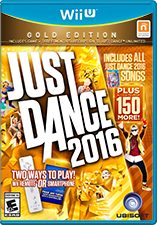
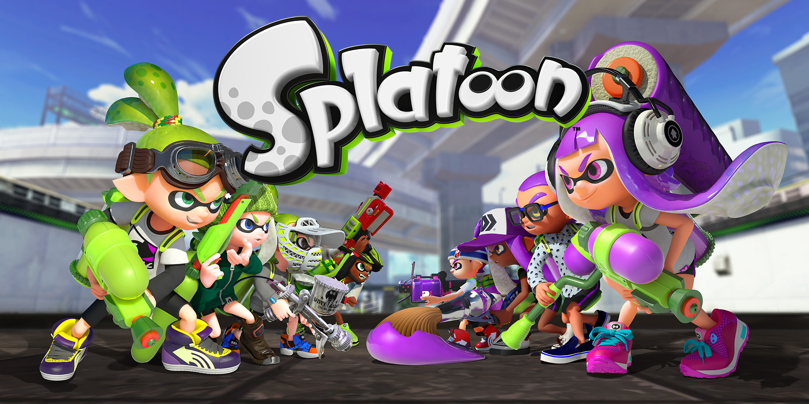
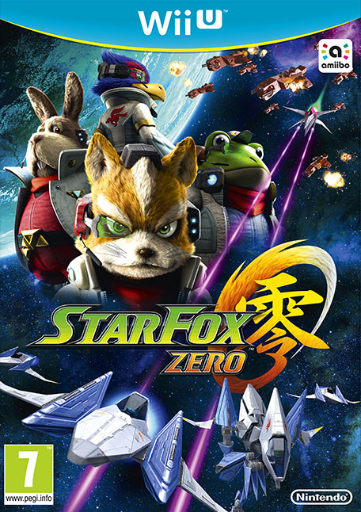
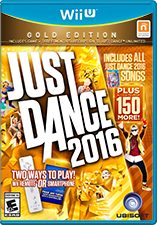
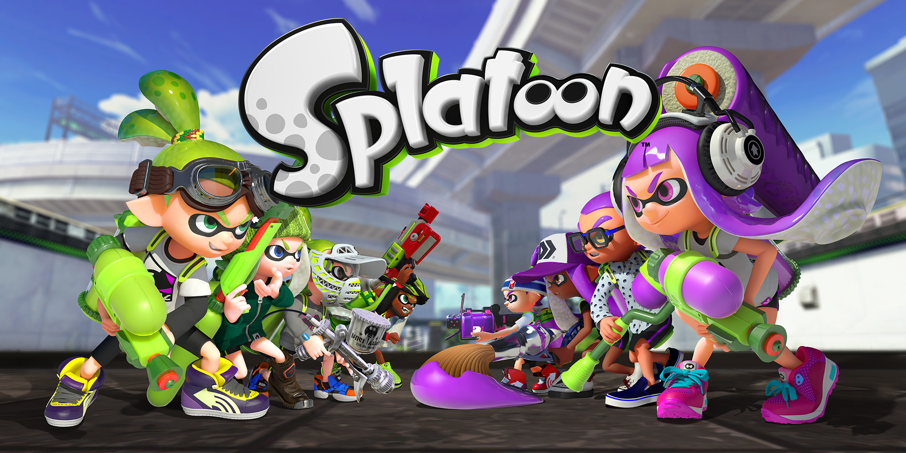
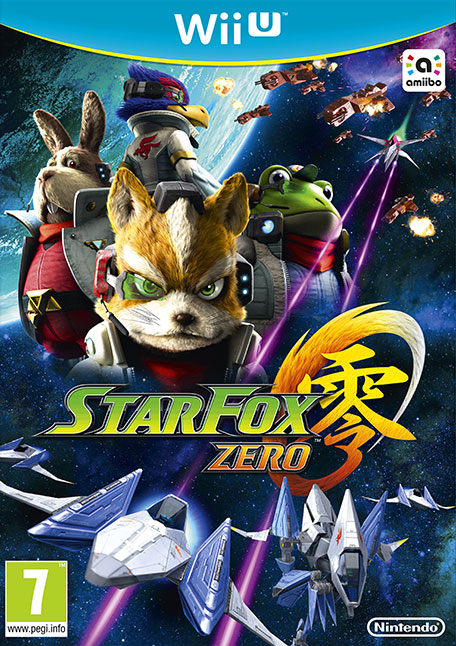

Wii U es la primera consola de Nintendo en producir gráficos en alta definición hasta una resolución de 1080p. Incluye un nuevo mando que incorpora una pantalla táctil igualmente capaz de reproducir gráficos en alta definición que permite seguir jugando con la consola incluso cuando el televisor está apagado. A este nuevo mando se le ha denominado: Wii U GamePad. El sistema es retrocompatible con los juegos de Wii, y soporta los periféricos de Wii, como el Wiimote o la Wii Balance Board e incluyendo la tecnología NFC, además de que es compatible con las figuras amiibo como accesorio propio.
 





Mario Kart 8 es un videojuego de carreras desarrollado y publicado por Nintendo para la consola Wii U. Es la undécima entrega de la serie Mario Kart, octava en consolas de Nintendo. Fue lanzado en todo el mundo a finales de mayo de 2014, con 1,2 millones de copias vendidas en sus primeros cuatro días, convirtiéndose en el juego más rápidamente vendido de Wii U hasta la fecha.
Just Dance 2016 es el séptimo juego de las series de Just Dance, desarrolladas por Ubisoft. Su lanzamiento para las consolas de la generación actual será en octubre de 2015. Fue anunciado oficialmente en la conferencia de prensa de Ubisoft en la E3 2015 el 15 de junio de 2015.
Splatoon es un videojuego de disparos en tercera persona desarrollado y publicado por Nintendo para Wii U y actualmente para Nintendo Switch. Salió a la venta el 28 de mayo de 2015 en Japón y el 29 de mayo en Europa y América. En Splatoon, el jugador dispara tinta de colores a los enemigos, así como a las superficies del escenario.
Star Fox Zero es un videojuego de disparos de aviones de combate, co-desarrollado por Nintendo y Platinum Games. Su lanzamiento estuvo programado para la consola Nintendo Wii U en noviembre de 2015, pero finalmente se retrasó hasta abril de 2016.